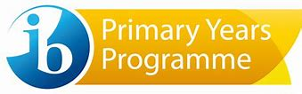

EIB LE CARTESIEN
EIB LE CARTESIEN
Primary Years Programme
The IB Primary Years Programme (PYP) for children aged 3 - 12 nurtures and develops young students as caring, active participants in a lifelong journey of learning.
The PYP offers an inquiry-based, transdisciplinary curriculum framework that builds conceptual understanding. It is a student-centered approach to education for children aged 3-12. It reflects the best of educational research, thought leadership and experience derived from IB World Schools.
The PYP has evolved to become a world leader in future-focused education. The PYP is an example of best educational practice globally, responding to the challenges and opportunities facing young students in our rapidly changing world.
The PYP curriculum framework begins with the premise that students are agents of their own learning and partners in the learning process. It prioritizes people and their relationships to build a strong learning community.
PYP students use their initiative to take responsibility and ownership of their learning. By learning through inquiry and reflecting on their own learning, PYP students develop knowledge, conceptual understandings, skills and the attributes of the IB Learner profile to make a difference in their own lives, their communities, and beyond.
The framework emphasizes the central principle of agency, which underpins the three pillars of school life:
Embedded in the framework is the recognition of the importance of fostering an individual's self-efficacy. Students with a strong sense of self-efficacy are active in their own learning and take action in their learning community.
Learn more about the PYP curriculum framework
The PYP focuses on the development of the whole child as an inquirer, both in school and in the world beyond. The PYP offers a transformative experience for students, teachers and whole school communities and delivers excellent outcomes by providing an education that is engaging, relevant, challenging and significant.
PYP learners know how to take ownership of their learning, collaborating with teachers to deepen understanding and increase their confidence and self-motivation. Through actively engaging in integrated ongoing assessment they become effective, self-regulated learners who can act on constructive feedback.
Guided by six transdisciplinary themes of global significance, students broaden their learning by developing their conceptual understandings, strengthening their knowledge and skills across, between and beyond subject areas.